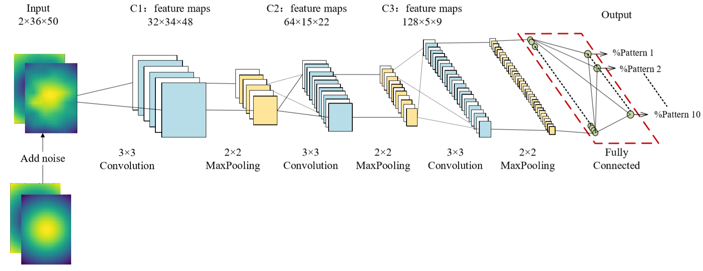

Research & Projects
Independent Research
A new mechanism for low-frequency bandgap formation via multichannel couplinge | 03/2020 to current
• Build theoretical models for coupled wave propagation in multichannel systems, such as a coupled axial-torsional system. Understand how the dispersion relations are affected by the material properties and geometric parameters
• Understand the underlying design principles to facilitate the inverse design problem for a specific performance (e.g. desired frequency range for the bandgap and static load bearing capability)
• Compare the efficiency of the resulting designs with classical low-frequency bandgap metamaterials based on resonant units
Acoustic spatial patterns recognition based on convolutional neural network and acoustic visualization
| 03/2019 to 08/2019
• Publication:The Journal of the Acoustical Society of America. Click to see full publication.

FIG 1.Illustration of our CNN network
• Convolutional neural network (CNN) --> recognize acoustic spatial patterns
• Coded in Python to train the CNN network
• Merits of CNN in acoustic pattern recognition
• Comparison with the traditional methods
Metallic material additive manufacturing for aerospace applications
| 02/2018 to 09/2018
FIG 2.Observation of metal friction welding by electron microscope (left: less splashing; right: more splashing)
• Conducted research on metallic material additive manufacturing technology
• Researched documents about the basic process, frontier progress in the metallic additive manufacturing area and its application in aerospace
• Observed microstructure and micro defects of metallic additive parts


 Summer Intern: Research on metal welding and additive manufacturing
| 06/2019 to 08/2019
Summer Intern: Research on metal welding and additive manufacturing
| 06/2019 to 08/2019 Summer Intern: Project of energy harvesting and solar battery| 07/2018
Summer Intern: Project of energy harvesting and solar battery| 07/2018